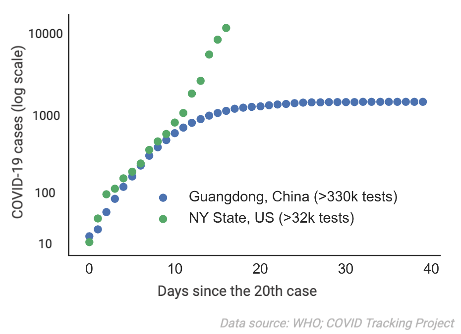

Help contain the next pandemic through home testing
How it works
1. We send a sample collection kit to your home. The kit is general purpose and can be used for any future pandemic.
2. We actively monitor emerging pathogens globally and when appropriate begin stockpiling testing reagents.
3. When the next pandemic comes, you safely test yourself at home. You send the sample back to us for analysis.

Motivation
With COVID-19, we've seen that regions with a rapid testing response do much better at controlling the spread of the virus. For example, Guangdong, China (five times more populated than NY State) was able to test more than 340,000 people by March 2nd 2020. Combined with strict social distancing, this enabled the province to stop the spreading of COVID-19. In comparison, by March 19th 2020 NY State has only conducted around 32,000 tests.

By putting general purpose sample collecting kits into the homes of millions of Americans and stockpiling critical testing reagents, we can test much more rapidly when the next pandemic comes. In particular, we can start ramping up testing capacity with our partners before the pandemic hits the US. The tests gathered from our network will enable:
- More informed decision-making among individuals
- Real-time monitoring of disease prevalence and spread
- A reduced burden on local hospitals for testing
- A jumpstart on vaccine and drug development
Through the large number of potential tests we aim to distribute, we can coordinate with the CDC, FDA and other agencies much more effectively than any individual institute alone.
Q&A
Can you test me for COVID-19?
No, this project is focused on monitoring and controlling the next pandemic. For more on the current state of COVID-19 testing, you can visit the CDC website. Others have also created a list of locations where you can get tested.
How can I contribute to this project?
The best way for most people to contribute is to sign up for a home sample collection kit and become part of our pandemic monitoring network. We are also looking to partner with individuals or organizations with expertise in assay development, epidemiology, media, and regulation.
Is this a for-profit or nonprofit organization?
We are a nonprofit organization incorporated in the US. Our goal is to monitor emerging infectious diseases with molecular biology and crowdsourcing post-COVID.
Who is behind this project?
Binbin Chen and Ethan Fast. We are Stanford-trained scientists frustrated with the state of early testing for COVID-19 in the US. We want to work across communities to ensure that the US is prepared for the next pandemic and provide a much easier way for people to assess their infection status. Binbin did his PhD work in machine learning and immunology and will receive his MD in 2021. Ethan’s PhD work focused on human-computer interaction and machine learning and he has co-founded several previous technology companies. Notably, in February 2020 we identified a list of candidate epitopes for potential COVID-19 vaccines.
How will you manage to test many people quickly?
Home collection kits allow us to save time by eliminating sample collection steps that are extremely resource and labor intensive. More importantly, the scale of our network will allow us to work with testing partners to ensure that we have a stockpile of reagents ready to dispatch when the next pandemic comes. By monitoring emerging pathogens through academic partners, we will also be able to prepare for potential pandemics much sooner.
Why is home testing not allowed for COVID-19?
The FDA very recently set a policy against home testing for COVID-19 because the tests in use had not been approved. We will work closely with regulators to gain approval for any tests we offer for a future pandemic.
Is your test FDA approved?
We can’t preemptively create an FDA approved diagnostic for a disease that does not exist yet. However, once an emerging pathogen has been identified, we will work with testing partners and the US FDA to certify our test with or without Emergency Use Authorizations.
How do you know you can develop a test for a future pandemic?
Almost all pandemics are caused by bacteria and viruses, each of which carry distinct DNA or RNA signatures. A technology called polymerase chain reaction (PCR) can rapidly amplify trace amounts of these pathogen signatures within a patient sample, allowing us to easily test for its presence. At most it takes a few weeks to construct a new PCR test once the genome of a new pathogen has been sequenced. Often the process can be accomplished faster, within days.
Will you support countries besides the US?
Our pilot project is focused on the US, but given sufficient demand we hope to expand to other countries and regions. To better gauge interest, we encourage you to sign up even if you do not live in the United States.
Support this idea!
Signing up makes it possible for us to apply for grants. We will not purchase any testing supplies until the COVID-19 crisis is fully resolved.
Contact
If you are interested in partnering, have a media query, or would like to provide any other kind of support, you can reach us at team@nextpandemic.org.